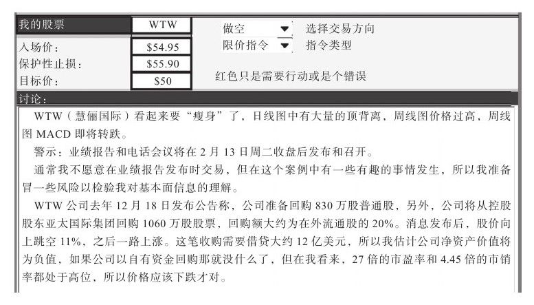
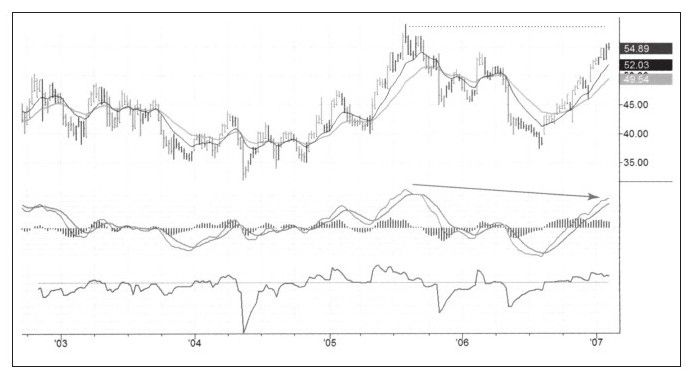
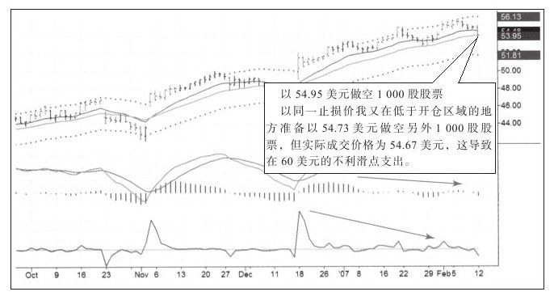
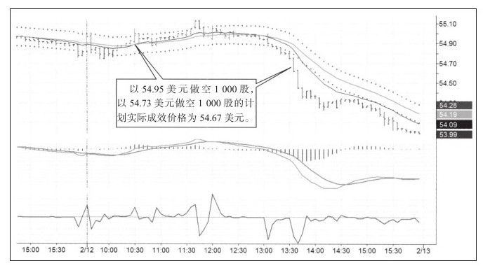
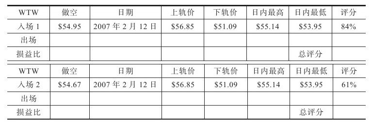
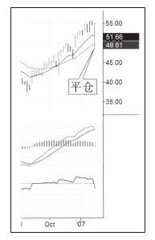
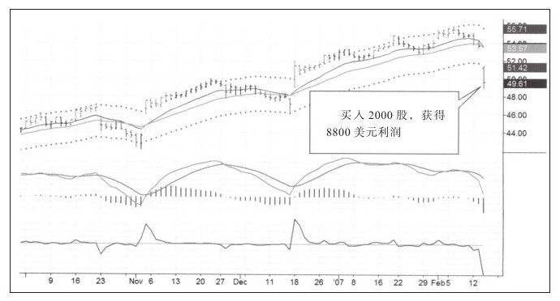
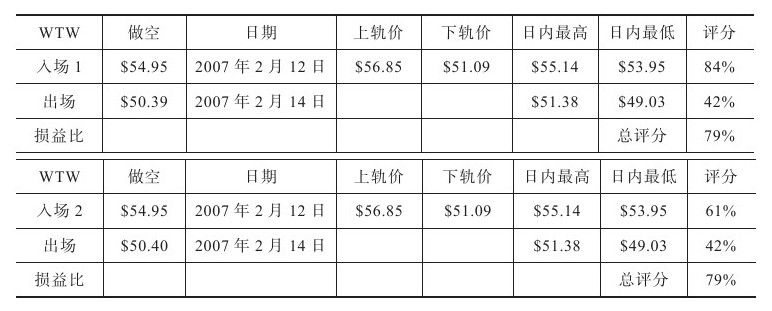
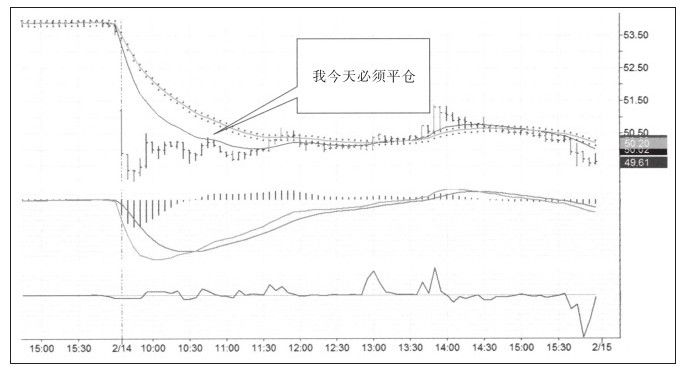
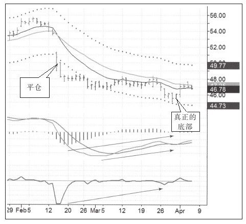

期货市场上，基本面分析者研究商品的供求关系，而股票基本面分析者通常会分析公司的财务数据；技术分析者研究市场中买卖双方交易的痕迹，聪明的交易者能将两方面结合分析并从中获利。
交易者不需要成为这两方面的专家，最好有个侧重。在使用两方面数据时不能出现信号互相矛盾的情况。如果其中一个发出强烈买入信号，但另外一个却是卖出信号，最保险的做法是不要交易。
技术分析交易者可以在股票、期货、指数和外汇上使用同样的技术指标，但基本面分析者就不能这样了。一个基本面分析师不可能同时是债券和原油的分析专家，股票基本面分析师也不可能同时是生物行业和国防业的专家。
使用基本面分析展开交易主要采用两个途径：宽幅筛选和窄幅分析。宽幅筛选的意思是交易者要对影响市场的主要基本面趋势有一定了解。例如，如果要寻找备选股票，就需要知道生物技术或纳米技术比日化行业或家电行业要有优势。这种基本的认识会让你关注市场中更有潜力的领域。第二个途径是从基本面分析得出候选交易股票，然后用技术分析方法进行过滤。这种方法的关键是把基本面分析当作交易信息来源的发生器，技术分析当作瞄准器。技术方法既可以让你从强迫交易中解脱出来，也可以让你在情势不利的情况下免遭巨大亏损。[1]
无论基本面的故事讲得多美妙，只要技术面因素不支持，就不能参与交易。这个原则在牛市和熊市信号发出时都适用。但如果基本面发出交易信号而且技术面也确认了这个信号，这种交易方式就非常不错。下面我将举例说明上述方法。
2007年2月10日的那个周末，我收到来自Spike集团的赛·克里兹发来的电子邮件（如图7-16所示）。集团成员每周末都会把他们挑选出来的最好的股票发给会员以获取奖励，大多数周末我都会选择一只喜爱的股票来交易。
这些股票中有些是基于技术分析的，但这只股票写了很多与基本面有关的信息。赛写道：WTW看起来要“瘦身”了，日线图中有大量的顶背离，周线图价格过高，周线图MACD即将转跌。
警示：业绩报告和电话会议将在2月13日周二收盘后发布和召开。
通常我不愿意在业绩报告发布前交易，但这个案例中发生了一些有趣的事情，所以我准备冒一些风险以检验我对基本面信息的理解。
WTW公司去年12月18日发布公告称，公司准备回购830万股普通股，另外，公司将从控股股东亚太国际集团回购1 060万股股票，回购额大约为在外流通股的20%。消息发布后，股价向上跳空11%，之后一路上涨。这笔收购大约需要12亿美元的借款，所以我估计公司净资产价值将为负值，如果公司以自有资金回购那就没什么了，但在我看来，27倍的市盈率和4.45倍的市销率都处于高位，所以价格应该下跌才对。

赛写道，他准备在54.95美元做空，止损在55.90美元，盈利目标是50美元。他写这些基本面信息的意思是说，这只“鸟”财务上“失血过多”，却想越飞越高，再往高处飞是不现实的。周线图看起来非常糟糕（见图7-17）。
交易头寸过大会让交易者倍感压力并影响决策能力。如上面的注释所说，我在这次交易中使用了两倍于常规的交易头寸，尽管远没有达到2%的风险上限，但双倍交易头寸耗去我更多精力。头寸过大影响了我的判断。
通常情况下，如果股票下跌时伴随着巨大的向下跳空缺口，就没必要急着平仓，价格会在缺口附近停留一阵以检验支撑强度，这会给交易者很多平仓机会。但是这次交易了双倍头寸，我在48小时内就赚了1万美元的利润，我开始担心利润会不会回吐，而且价格一开始从缺口开始的地方反弹，我就紧张不安，于是平仓。








这是一次非常草率的平仓，只获得了42%的评分，但总交易评分却达到了79%，非常不错。如果我再持有得久一些，成绩会更好（见图7-23）。

本次交易的心得：
·只要技术面支持，基本面信息会提供有用的交易信号。
·两条移动平均线之间的价值区对价格有吸引作用，价格总是在价值上下波动。
·大头寸进行交易对我们的决策有负面作用。
·做好交易记录很有必要。
可视化交易日记是非常有用的学习工具，如果做好交易记录，当回头看这些日记时，你会从经验中受益，回顾交易日记会让你变成更好的交易者。
[1]我对这种方法深信不疑，因为几年前我告诉那些不使用技术分析的朋友们：在网上找一个比如www.stockchart.com这样的图表网站，看看周线图和26周移动平均线，不要买那些均线向下的股票，因为均线向下是下跌趋势。